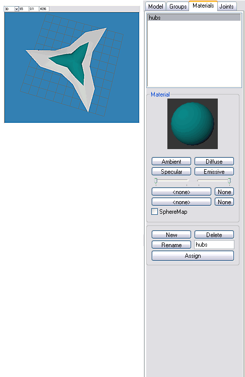

MilkShape For UT2003 Static Meshes/Materials And Smoothing For UEd3
NOTE: The pictures in this tutorial do not show the interface elements to relative scale.
Materials & Smoothing for UEd3
Assigning materials properly in MS3D is essential for preserving the smooth or hard edges of the model when it is imported into UEd3. While modeling, using MS3D's Smoothing Groups tool provides necessary visual feedback. However, the smoothing groups applied in MS3D are essentially ignored; instead, UEd smooths surfaces of objects from MS3D on the basis of material names.
MilkShape materials need not reference a file texture, although that is an option which will be explained in the 4th part of this tutorial. Only material names need be exported with the model. These are easily set up in MilkShape.
Press Ctrl+Shift+A to deselect all. Switch to Groups tab. In the Groups list, highlight hubs and press the Groups box Select button.
Switch to Materials tab. In the bottom set of buttons, click New. Rename Material01 as hubs. In the upper set of buttons, click Diffuse and select a color from the Color Picker that opens. Click Assign at the bottom of the Materials tab.
In the 3D window, hubs will reflect the color of the new material if Smooth Shaded is enabled for that viewport (right-click on a viewport to set the shading and other options).
Deselect all, then highlight and Select UpSurf in the Groups tab list. Using the procedure described, create a new material named UpSurf and Assign it to the UpSurf group. Use a different Diffuse color for material UpSurf.
Repeat the procedure to Assign a new material to group DownSurf. Name the new material DownSurf.

FIG. 12 Material assignments in MS3D |
Note that the Materials list now echoes the Groups list, and recall that the Groups have been assigned different smoothing groups. This is the basic rule for assigning materials in MS3D to preserve smoothing groups in UEd3 (and the hard edges between them) – each smoothing group must have a uniquely-named Material assigned to it. In UEd, smoothing is done on the basis of the Material names. For complex models, using material names that match those of the model's Groups helps keep things organized and intelligible.
Next: Export and Import